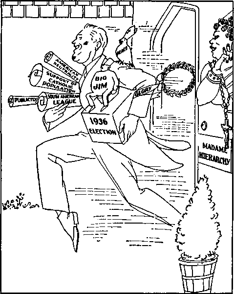

BENITO MUSSOLINI
A JOURNAL OF FACT HOPE AND COURAGE
IIIIIIIIIIIIIIIIIIIIIIIIIIIIIIIIIIIIIHIIIIIIIIIIIIIIIIIIIIIIIIIIIIIIIIIIIIIIIII in this issue JUDGING THE HIERARCHY BY ITS FRUITS (Part 2) EXPOSED GUESS WHAT "CHURCH” ABETS MURDER
EQUAL PROTECTION OF LAWS
DISOBEDIENCE TURNS A WISE MAN INTO A FOOL
UlllllllllllllllllllllllilllllllllllllllllllllllllUHIIIIIIIIillllllllllllllll
every other WEDNESDAY five cents a copy one dollar a year Canada & Foreign 1.25
Vol. XVIII-No. 459 April 21, 1937
Judging the Hierarchy by
Ku Klux and Other “Blessings” 453 The Liberty Bell Cracked
Great Conspiracy Against Liberty 457 The Coughlin-Gallagher Farce
Always Pleading Poverty 460 The Claims of the Hierarchy
“Religion” in
Admit Their Readers
The “Incorrupt Flesh” of
Jealous of Miss Breen’s “Slacks”
Roman Catholic Cult Claims
Catholic Women Control the Films 471 Papers Love to Put It On
■—-- —■——————
Getting at the Bottom of
Knew Where to Look
Paterson Asleep at the Switch 475
When Chris Has Ear in the Pillow 475
“Peace and Safety” Dictatorships 476
Rape of the Spanish Republic 476
Guess What “Church” Abets
Equal Protection of Laws 467
Disobedience Turns Wise Man
“The Wisdom of God
He Loved Women Instead of God 478
Cartoons and Illustrations
The “blessing” of the Hierarchy
“We are all going forward together” 452
Blessing the Supreme Court and the Constitution
Reverend L Spewmore,
the village cut-up, still at it
‘ ‘ Communism ’ ’ and the
Destruction of one naturally follows the destruction of the other
••«xQ*----------------- - ........ ......
Published every other Wednesday by
GOLDEN AGE PUBLISHING COMPANY, INC.
117 Adams Street, Brooklyn, N. Y., U. S. A.
Clayton J. Woodworth President Nathan H. Knorr Vice President
Charles E. Wagner Secretary and Treasurer
five cents a COPT
91 a year, United States; $1.25 to Canada and all other countries.
Notice to Subscribers
Remittances : For your own safety, remit by postal or express money order. When coin or currency is lost in the ordinary mails, there is no redress. Remittances from countries other than those named below may be made to the Brooklyn office, but only by international postal money order.
Receipt of a new or renewal subscription will be acknowledged only when requested. Notice of expiration is sent with the journal one month before subscription expires. Please renew promptly to avoid loss of copies.
Send change of address direct to us rather than to the post office. Your request should reach us at least two weeks before the date of issue with which it is to take effect. Send your old as well as the new address. Copies will not be forwarded by the post office to your new address unless extra postage is provided by you.
Published also in Bohemian, Danish, Dutch, Finnish, French, German, Greek, Japanese, Norwegian, Polish, Spanish, Swedish.
British Canadian Australasian South African
Offices for Other Countries
34 Craven Terrace, London. W. 2, England 40 Irwin Avenue, Toronto 5, Ontario, Canada 7 Beresford Road, Strathfleld, N. S. W., Australia Boston House, Cape Town, South Africa
Entered as second-class matter at Brooklyn, N. Y., under the Act of March 3, 1879.
Volume XVIII Brooklyn, N.Y., Wednesday, April 21, 1937 Number 4S9
(Part 2)
Mr. Roosevelt has received the “blessing” of the Hierarchy, and it is well for him and for all to take a look at the record and see what it means.
Pope Pius IX sent the Golden Rose to the king of the Two Sicilies, and in less than a year he lost his crown and kingdom. He sent his blessing to the Austrian kaiser, and in less than a year he lost Venetia, and suffered defeat at Sadowa. He sent the Golden Rose to Queen Isabella of Spain, and in a short time she lost her crown, and died in exile.
He sent the Golden Rose to the Empress Eugenie of France, and in less than a year the emperor and the empress lost their crowns, and both, later, died in exile, and their only son was killed by Zulus in Africa.
two days later.
The “blessing” of the Hierarchy—Ezekiel 16: 33,34
The empress of Brazil was blessed by the pope. She broke her leg three days after, and she and the emperor were dethroned and died in exile. The crown princess of Brazil was blessed by the pope; her babe was born deformed, and she died in exile.
The pope blessed the emperor of Mexico, Maximilian. He was dethroned and killed by his people. He blessed the emperor’s widow. She became a hopeless maniac, and died in exile.
The pope blessed a steamer filled with nuns en route to South America in 1870. It never reached its destination, every soul perishing.
The pope blessed the floating palace bound from Montevideo to Buenos Aires. It foundered
The pope blessed General Boulanger, and in less than two weeks he was an exile, later committing suicide.
Mrs. Sherman, wife of the American General Sherman, received the Golden Rose, and died soon after.
Dr. Windhorst received the papal “Order of Christ”; he died in less than a year.
In 1895 the archbishop of Damascus, at Vittoria, gave the pope’s blessing to the Spanish troops and fleet; Spain lost two fleets and two armies.
The queen regent of Spain and King Alfonso were blessed by the pope. They promptly
lost Cuba and the Philippines, and Alfonso has since lost his crown.
In 1897 the papal nuncio blessed the grand “Charity” bazaar in Paris. Within five minutes it was in flames, and nearly 150 of the aristocracy perished, including the sister of the empress of Austria.
The empress of Austria received the Golden Rose. She was murdered in Switzerland, her only son committing suicide previously, and her nephew losing his throne subsequently; Austria has ceased to exist as an empire to this day.
King Edward VII of England visited the pope and received, as a mark of favor, a signed photograph of Pope Leo XIII. At once came news of a reverse to British troops in Somaliland; the king’s health began to fail, and was never restored.
Princess Ena of Battenberg received the pope’s blessing. Within a fortnight she narrowly escaped death at the hands of an anarchist, some 13 hapless victims succumbing, and 80 others being wounded. Her wedding garments were bespattered with human blood. One, at least, of her sons is afflicted bodily. Her marriage was “annulled” by decree of the Roman Bota.
The pope blessed Queen Natalie of Servia in 1906. She ended her days as a fugitive in exile, her only son, the king, being murdered.
"We are all going forward together"
The queen of Portugal—one of the Orleans—was blessed by the pope. Her husband, the king, and her eldest son, were murdered beside her in a carriage, and she and her surviving son escaped—as exiles— to England, throneless. Portugal has been a “republic” ever since.
At the height of his power, the German kaiser visited the pope, and received his blessing. He lost his throne, and has lived in exile ever since.
In 1926 a rich English landowner, Mr. Dyer Edwards, went to Rome, was “blessed” by-the pope, and in four days he was dead!
In 1926 the pope sent the Golden Rose to the queen of Belgium. In 1934 the king was accidentally killed, and since then the young Queen Astrid was accidentally killed.
In 1928 the pope blessed the “Italia” airship, and gave it a “cross” to place on the North Pole. The airship foundered and broke in two, half its crew being lost, while General Nobile was severely injured, and has since been censured by an Italian committee.
The pope lays great stock on the blessing of the Golden Rose. It has been a feature of the papacy for 1,000 years, so it claimed. On April 5, 1937, it was delivered to Queen Elena of Italy, empress of Ethiopia. And now—?
On the morning of election day, five hours before it was daylight in America, the National Socialist Angriff, Berlin, Germany, published a statement flatly charging a deal between President Roosevelt and Cardinal Pacelli by which the president made important concessions to the Catholic Church, in return for which Cardinal Pacelli is declared to have delivered him the Catholic vote in the United States. This claim is now all the more remarkable in the fact that “Father” Coughlin’s supposed following of around 8,000,000 to 9,000,000 people disappeared like a snowflake in July. The great crowds that followed him must have got a tip at the last moment to vote for Roosevelt. That was Roosevelt’s “blessing” by the Hierarchy. Whether it turns out to be a blessing in the end remains to be seen.
The U.S. flag seemed to be getting along pretty well. People were waking up to the fact that the biggest flag-saluters were not the best Americans; and that some that refused to make the flag an object of worship are such staunch Americans that they will be jammed into a prison cell before they will give up their American rights on this or any other subject that affects their relationship to God. But now there is trouble ahead, probably. The “Reverend” John J. Rati-gan, chaplain of St. Michael’s, is shown in the Newark Ledger in the act of blessing the Stars
and Stripes. He seemed to have on a lace nightie, and the three boys also shown in the picture had on lace chemises, if that is the right word. Anyway, the future for the flag looks dark. Anything that the Roman Hierarchy hates as it does the things the U.S. flag stands for is in for trouble when the Hierarchy starts to “bless” it.
Just to have it in the record: When the pope blessed the Spanish rebels he blessed Mohammedan Moors slaughtering Basque Catholics; also he blessed such soldiers for killing other Catholics on the very altar steps of the Ba-dajoz cathedral. He was delighted when he heard of the fall of Malaga, where scores of Catholic children, barefoot, hungry and with only one garment on, were slain by his airplanes, and by his Moorish soldiers, in midwinter.
Ku Klux and Other
Southern “Blessings”
What price glory?
The Ku Klux Klan has sold out. It never had anything to sell except nightshirts and real estate. It still has the nightshirts, but in pursuance of its policy of cashing in it has sold its so-called “Imperial Palace” to the Catholic church, which has turned part of the building into a chapel and will use the balance for a convent. A big Catholic church and parochial school will be built on the grounds. In the light of this information, the persecution of Jehovah’s witnesses by the Atlanta Ku Klux is perfectly understandable. The Jewish high priests knew perfectly what they were about when they offered Judas his thirty pieces of silver.
The shrimp industry of Louisiana is in danger. Heretofore, by strict attention to business, the average shrimper has been able co-make about $500 a year, but the business has now for the first time been officially “blessed” by a Roman Catholic archbishop; and all history shows that means hard times, little business and much danger.
In the presence of Cardinal Dougherty and Hugh L. Lamb, of Philadelphia (both names will be recognized by readers of The Golden Age), Cardinal Pacelli drove to Independence Hall and inspected the Liberty Bell. He found it cracked, and very much so, since the two men with him bluffed Gimbel Brothers’ radio station W1P into crowding Judge Rutherford off the air, from that station.
Something happened to convince Gimbel Brothers that maybe it was not such a clever thing after all to slap over 125,000 listeners in the face, but they got “blessed” as a result, anyway. The American Legion straightway conferred a “Certificate of Merit” on the station. Guess the “church” that is back of the Legion.
Transportation
Wrecks Ahead
New York city purchased $500,000 of new apparatus for the fire department. Simultaneously twelve firemen were projected aloft clinging to the top of 85-foot extension ladders. So far so good. But then the new apparatus was officially “blessed” by Monsignor Wm. E. Cashin and the “Reverend” John J. McElligott, Jr.
The Parish Monthly Calendar, St. Joan of Arc Church Directory, Fairview, Camden, N. J., after admitting that there are more and more deaths on the highways in spite of the St. Christopher medals carried in the cars, puts it up to the “faith” of the drivers. If they believe in the medal, all is well; and this belief, if they have the medal in the car, “can stop skids, blow-outs or any other calamity.” What a beautiful system of saving money for the customer when there is enough “faith”! and what a beautiful system of making money when there is enough “faith” to just pay for the medal and no more. In the latter case it is too bad that the man who bought the medal did not have enough “faith” to back up his cash, but the alibi for the man who finally got the cash is perfect anyway.
At hand a picture of some “church” in Berlin, N. H.,where skis are being “blessed”; the idea is that when you get your skis “blessed” and take chances of breaking your neck, nothing happens. How silly it all is! Does anybody suppose for a minute that the great Jehovah God would take any notice of such nonsense, except to condemn it?
It is getting to be quite the thing for Americans to exercise their kissing rights. A few days ago there were pictures of Postmaster General Jim Farley down on his knees kissing the ring of Pacelli. The next thing was a column in a San Francisco paper about Mayor Rossi of that city doing the same thing when Pacelli came out to “bless” the bridge built across San Francisco bay by American taxpayers. Farley and Rossi have a perfect right to kiss any part of any man they choose. Pacelli liked it all right. When Farley was down on his marrow bones, kissing his way up, Pacelli had a grin on his face like a leopard at feeding time.
Dadisho N. Toti, Philadelphia, was given 4| years in prison for obtaining money under false pretense. He sold masses and “blessings”, posing as a priest. Now if they would send up for 100 years each every man jack that sells masses, posing as a priest, they would be getting somewhere.
In Buffalo a youth posing as a monk bulldozed sixty families into giving him sums up to $10 for “blessing” them or withholding from “cursing” them. It is easy to see where young Rykaczewski got the idea of sandbagging the people out of their money by the pretense that he could give them indulgences or other favors, and if the police only had the nerve to tackle the big shots in the swindle they might get somewhere. But there is no danger. Instead of going after the real swindlers, the police are far more likely to take orders from them.
The Lord, in one place, speaking on the subject of prayer, urged that His followers be not as the heathen, who have the idea that the more prayers they offer, and the more they say in their prayers, the more sure they are of acceptance of their requests.
Prayer from the heart is acceptable, if offered in a proper manner by those whose hearts are right, but God is not interested in such trivial things as human words from His enemies, nor in the multitude of them, no matter who offers them.
Having this in mind one examines with interest a little piece of advertising matter sent in from Cleveland. The general theme is “Determined and World-Wide Opposition to Masonic Sects”, and it is alleged to be “Recommended by His Holiness, Pope Pius XI”. All right. November was the big month. The number of “saints” to be invoked on the program was just 26 in thirty days.
There were various objectives besides the Masons, such as thanksgivings, for the afflicted, the sick, the infirm, dead associates, local centers, directors, promoters, the departed, perseverance, the young, the first communions, parents, families, reconciliations, work, means, clergy, the religious, seminarists, novices, vocations, parishes, schools, superiors, missions, retreats, societies, works (“many”, “wonderful”), conversions, sinners, the intemperate, spiritual favors, temporal favors.
The number of prayers (masses?) to be offered ranged from 895,645 for the clergy down to 14,023 for the local centers. All together, they ran to the whopping big total of 7,701,629. That is an interesting text, in Ecclesiastes 5: 2, where the Word of God says, “God is in heaven, and thou upon earth: therefore let thy words be few.”
Those that put up the 7,701,629 prayers in one month, especially against the Masons, have some consolation. They can plead, truthfully, that they do not know anything of what is in the Bible, and, therefore, that they did not know they should not have so much to say. And they can also plead that their prayers were not addressed to God, anyway, but to certain Roman Catholic “saints”.
Maybe you don’t know how to dodge the big bonfire; but, if the New York Herald Tribune story is correct, it is so easy that it is a shame to take the money. All you need to do to get “the plenary indulgence of the Portiuncula” is to head for St. Patrick’s cathedral between noon August 1 and midnight August 2 (when business is dull on account of so many being out of town on vacation) and do what you are told in the way of confessing and coughing up your spare change.
The result, as sure as you are a foot high, and are sap enough to believe the Herald Tribune story, will be that you will be granted “the indulgence, which grants remission of the entire temporal punishment due for sin so that no further expiation in ‘purgatory’ is necessary”.
Meantime the priest that collects what you brought with you in the way of cash will have added materially to his roll and can enjoy such satisfaction as comes to one who has rescued another from a place that does not exist and never did exist anywhere at any time except in the minds of the money-mad collectors of other people’s wages.
A letter just at hand from Martin J. Blake, C.M., under the general heading, “Queen of Angels, Pray for Us,” Niagara University, N. Y. Blake starts out fair enough. At the first go-off he says, “God grant that our departed are in heaven.” All O.K. Then he gets down into the subject of explaining about 45 masses in
Blessing the Supreme Court and the Constitution
November, and says, “Your dear ones departed and ours look to you and to us for their share in this great manifestation,” etc., and then breaks the news that if you want to do something you should send along some cash, “The usual offering of one dollar or more.” It is positively awful the way some of these dead relatives are always hollering for money. In bygone years live ones have done it. One would think that it would be enough sorrow to have a relative pester one for money while he was alive, but when he, she or it is dead, to keep on pestering is just too much. Still, if you want to send him the dollar, you may.
“Reverend Romuald, S.O. Cist.,” prior of The Cistercian Monastery of “Our Lady of Spring Bank”, Okauchee, Wisconsin, would like to build a new monastery and would accept an offering with that end in view, and, incidentally, you would better step on it if you want to keep some of your friends from cooking to a cinder. Here’s how:
You surely have someone dear to you who has passed into eternity, but who might still need the help of prayers in the pains of ‘purgatory’. Please do not let him wait.
The idea is that if you come across with the long green there is a chance that your friend may get a break. Incidentally, it will be good for you too, for if you get these friends out of the jam they are in with the priests, why—
They will gladly intercede before the throne of Almighty God for their friends on earth and aid them in the battle of life.
Ah, yes, Mabel! It’s just as easy as that.
The German Golden Age says:
An Irishman, in some way getting hold of a Bible, read it with keen interest. His priest, who happened to hear of it, came to him quickly and, finding him reading it, said:
“Michael, you know the Bible is only for the priests, and not for the common people. ’ ’
“Really? But I have read in the Bible, ‘Ye shall teach them to youi' children (Deuteronomy 11:19)’; the priests have no children.”
“But, Michael, you certainly cannot understand the Bible. It was not written for the likes of you.”
“But, Reverend, what I do not understand does not hurt me, and what I do understand is of greatest benefit to me. ”
“Michael, you must go to the church. She will teach you and give you the pure milk of the Word of God.” “But, Reverend, where does the church get this milk ? Is it not from the Bible ? ’ ’
“Yes; that is true.”
“Then excuse me, Reverend, but despite the great confidence I have in your dairy, I prefer to milk the cow myself.”
The generations of American statesmen that have gone were not trying to curry favor with the Roman Hierarchy. At the time of the Revolution there were only 30 priests in the United States; now there are 30,000, and they are breeding like flies.
George Washington was a manly man. Most certainly he would never have received such a letter as Judge-Rutherford dispatched to Franklin D. Roosevelt regarding religious persecutions in the United States, and allowed it to go unanswered. One of his truthful (at that time) and statesmanlike utterances follows:
We have abundant reason to rejoice that in this land the light of truth and reason has triumphed over the power of bigotry and superstition, and that every person in:i\ here worship God aceordinp to the tates of his own heart. In this enlightened age, and in this land of equal liberty, it is our boast that a man’s religious tenets will not forfeit the protection of the laws nor deprive him of the right of attaining and holding the highest offices that are known in the United States.
In the year 1875 General U. S. Grant set out the philosophy of the true American when he said:
Let us labor for the security of free thoughts, free speech, free press, pure morals, unfettered religious sentiments and equal rights and privileges for all men, irrespective of nationality, color or religion; encourage free schools, resolve that not one dollar appropriated to them shall go to the support of any sectarian school; resolve that neither State nor nation shall support any institution save those where every child may get a common school education, unmixed with any atheistic, pagan or sectarian teaching; leave the matter of religious teaching to the family altar, the church and the private school, supported entirely by private contributions. Keep the church and state forever separate.
At the reception of Cardinal Pacelli at Fordham (Roman Catholic) University, in New York, the “Very Reverend” Robert I. Gannon, president of that institution, referring to the number of Catholic students dressed in the uniforms of the Reserve Officers’ Training Corps, asked the question, “Does it seem strange to anyone, then, that the first Fordham students to welcome him wore the military uniforms of the R.O.T.C.?” The answer is, No! It does not seem one bit strange; for the Roman Hierarchy is not now and never has been a peace-loving institution, but where anything whatever is to be gained by the mass murder called “war”, it is enthusiastically for it every time.
A dispatch from Santa Clara, Calif., reported the receipt of six new army trucks at the Roman Catholic University of Santa Clara, and that more would be sent shortly. Why, sure!
New York city’s first colored judge, Myles Paige, is a Roman Catholic and a member of the Fourth Degree Knights of Columbus. His salary will be $10,000 a year; the job expires nine years hence. Mr. Paige is a Harvard graduate.
The Roman Catholic Hierarchy is using all the powers at its command to get the whole world, and especially the United States, all steamed up over the Communist problem, so that, in humble gratitude, the peoples of the earth w ill fall at their feet as their only saviors from this dread monster. It is to laugh. The total vote in the greatest Communist center of the United States was 2,750,000 in the late election, and the Communists got 31,987, or a little over 1 percent. This is like rushing up to a child and throwing it over the roof of a house to save it from a mad dog when there isn’t any mad dog at all.
In view of the fact that out of nearly fifty million votes polled in the United States, only 51,855 went to the Communist ticket, won’t somebody explain why the Roman Catholic Hierarchy, in every city, in every town, in every newspaper and in every way is trying to scare the whole world, including the United States, with a Communist bugaboo? The answer is that it is all a smoke screen, all pure hypocrisy, an attempt to stampede the whole world into giving control of everything to those lovely successors of the apostles (?) who did such a marvelous job in Mexico and Spain.
The Knights of Columbus have inaugurated what they term a “world fight on reds”, by which they mean any and every organization that believes the Roman Catholic Hierarchy is an anarchist organization, and is therefore opposed to it. In due time Jehovah God will inaugurate a “world fight on reds”, the real reds, the ones that have filled the world with strife, sorrow, fear and turmoil. He won’t need to “plan” it; it is already announced in His Word. When it is over, the Hierarchy and all attendant curses, including the Knights of Columbus, will be for ever at an end.
The Sherbrooke Daily Record at hand with a column from Magog, announcing a big gathering of Knights of Columbus to fight Communism. The Grand Knight was from Magog. The chaplain was from Magog. The mayor of Magog was there. And one of the speakers was from Magog. And Gog of Magog was there, too. (Ezekiel 38:1-3) There probably aren’t five Communists within 100 miles of Magog, Quebec. The big excitement was not to get the Communists; for they are weak and few. They want to get—■ whom do you suppose ?
Monsignor John A. Ryan, Catholic prelate of Washington, recently said:
If I had to choose between Russian Communism and Italian Fascism I should without hesitation take the latter.
Reverend I. Spewmore, the village cut-up, still at it
He did not need to say it: everybody knows it. He could have come out flat-footedly in favor of Fascism, the same as his fellow prelates Bishop Schrembs of Cleveland and the late Bishop Gallagher of'Detroit.
In an address at Belfast, Ireland, Captain Herbert Dixon made the statement that loyalists in the north of Ireland were faced with an alliance of Communists, Roman Catholics and rebel intellectuals banded together for the disruption of the British Empire.
Early last year the newspapers were filled with stories from Philadelphia of how the Jesuits were going to drive Communism out of the United States and had started a great school for that purpose, but a few months later, at an address in the salne city, “Reverend Father” Charles P. Bruehl, of St. Charles Seminary, Overbrook, pooh-poohed the whole thing as almost nonexistent in the schools, adding that “much of what is called Communism and Socialism is only what the ‘holy father’ has proclaimed as social justice”.
The Great Conspiracy Against Liberty
A Washington (D.C.) dispatch contains the following regarding the great conspiracy now under way for the deprivation of the common people of their hard-won liberties, at the hands of their most powerful, most unscrupulous enemy. It appeared in the Toronto Sentinel:
Which is more dangerous, a quarter of a million noisy and demonstrative Communists or twenty millions of Romanists un, der command of the shrewd and elusive Hierarchy? In the last presidential election, Communists cast 102,991 votes. That indicates that they number about 255,000 in the United States. The Romanists cast 8,000,000 votes because they number 20,000,000 in this country.
The Communists had their own candidate for president. Their 102,991 votes went to him. But if they were all in one big city and voted solidly for the Democratic or Republican ticket, their vote would hardly decide the city election. The Romanists cast their 8,000,000 votes solidly for Mr. Roosevelt under Vatican and Hierarchal command. Without that solid block of votes he would have been defeated. Which alien-minded group is the more dangerous?
Both are thoroughly un-American. But which has wrecked the New World from the Rio Grande to Cape Horn? Which has blighted all southern Europe? Which has kept the Bible on its Index of Prohibited Books nearly 400 years? Which is keeping the Bible out of all schools now? Which was back of the pope’s crusade that repealed the Prohibition Amendment?
Which holds billions of dollars of wealth in America? Which controls and censors the press and the radio? Which does no big newspaper dare criticize?
“Communism” and the “Simple Simon” Cops
Calling all cars—calling all cars. Go to the corner of 23d and Skunk streets. Break up a Communistic gatheringbreak np a Communistic gathering— Calling all cowards—Calling all cowards. Go to 23d and Skunk streets. Break up a plot against the U. S. Government— Calling all tin-horn patriots—calling all tin-horn patriots. Go to 23d and Skunk streets. Break up a plot against the V. S. Government-
Calling Mist’ Hearst—calling Misf Hearst Hurry man, hurry. Papa’s still seeck.
Here, you bum! Y’re under arrest. Gi’me a holt of dem whiskers.
Ha, false! 'Why, why, Father Smellpot! Holy mither, it’s you!—Shuddup, Cap.
Moral: It’s always the innocent bystander.
Which keeps its critics off the air? Which empties our schools of its children but fills them with its alien-minded teachers? Which has forced the enactment of law in many States to fine and imprison school officials for asking or stating whether a teacher is its adherent?
Which is ruled here by an enthroned hierarchy created by the outstanding autocrat of all time ? Which is absolutely subject to law handed down from the throne of a triple-crowned monarch in Europe ? Which places its supreme ruler above all American authority by declaring him infallible as sole agent of God on this earth? Which declares that government by the people is fundamentally wrong and dangerous?
Who and what is back of the national hysteria about Communism? It is merely a smoke screen to hide the deadly work of the alien Roman Hierarchy and its 20,000,000 fanatical subjects. It is created by the Hierarchy and its autocratic master for that specific purpose. This writer has sought diligently to impress this foundation truth upon the public. That work now begins to bear fruit.
Their own bitter experience and persecution by the Hierarchy can no longer fail to open the eyes of some publications. The truth begins to dawn. They see that it is Romanism, not Communism, that is wrecking our country. They are helping to spread the light. Last February 26 this truthful statement appeared as a marginal note in The Golden Age, a weekly magazine published in Brooklyn:
American radio listeners and newspaper readers, February 12, 1936, were greatly interested in the news from Germany that 150 priests and others had been arrested, caught with possessing and distributing Communist literature. It is perfectly apparent that the Communist scare in America is of Jesuit manufacture. The attempt, in both countries, is to secure absolute papal control.
With masterly sleight-of-hand cleverness the Hierarchy is riveting public attention on Communism while it completes the destruction of liberty and of government by the people. While flooding the world with scarecrow propaganda about the dangers of Communism, the Hierarchy sends out hundreds of its priests to scatter Communist literature.
The infamy of its strategy is unfathomable. It scruples at nothing. It is not yet clear whether the Papal Empire with its hidden underworld methods and its vast unaudited wealth deliberately helped to inflict this depression on the world. But it is perfectly obvious that the depression has played into its hands. National and world calamities have uniformly come when needed to further papal interests and hidden intrigue.
When the Know-Nothing movement threatened to sweep the enthroned Hierarchy from our land, the Civil War came and annihilated that movement. When the American Protective Association—the A. P. A.— challenged new papal aggressions under Pope Leo XIII, the Spanish-American War killed the A.P.A. When the Guardians of Liberty and kindred organized forces became formidable a quarter of a century ago, the World War lashed America and destroyed those forces.
When the aroused conscience of the United States met and vanquished Rome in the 1928 presidential election, the depression struck us as a thunderbolt out of a clear sky. Is the same covert hand of infamy and destruction producing such catastrophes ? Is that why they appear with timeliness so striking? Whatever may have caused the depression, Rome is using its confusion and distress as the occasion for destroying constitutional government in the United States.
The Coughlin-Gallagher farce was good while it lasted. Gallagher is now dead, and Coughlin might as well be, for he could not fool 8,000,000 people again. Before Gallagher died he admitted that though Catholics constitute but one-fifth of the population of Michigan, one-half of the boys in the Industrial School for Boys at Lansing are Catholics. In other words, boys that have been made acquainted with the “purgatory” system, which is admittedly bribery in its worst form, or at least attempted bribery, are only onefourth as law-abiding as boys that have not been taught that iniquity.
Before Bishop Gallagher died (according to his story, as published in the New York Times), Catholics who were planted in certain organiza^ tions in Michigan, as spies, reported that when the word is given for revolution, the first thing that will be done is to shoot priests and nuns on sight and burn the churches, and that this will probably come within four years. This fairy story, it may be added, was to do all possible to scare the American people into the arms of Rome. It is doubtful if there is one word of truth in the whole yarn.
Not saying so for sure, but The Golden Age is of the opinion that the Black Legion of Detroit is really of Roman Catholic origin and operation. Two of the members of this murder club were found to be members of Coughlin’s National Union for Social Justice. The Legion is charged with the burning of Coughlin’s original Shrine of the Little Flower just when the new church was ready for occupancy. Wonderful system! It is alleged to be against the Roman Hierarchy. Why, sure! Part of the ethics of murderers is to divert the blame from themselves and throw it upon the innocent. The published oath of the Black Legion is almost exactly like the published oath of a 4th degree in a well-known Catholic organization. The Black Legion gave itself away when it revealed its aim to be a dictatorship in America. The Hierarchy is willing to use even a seemingly anti-Catholic organization to accomplish its ends.
Destruction of one naturally follows the destruction of the other
The Roman Catholic Hierarchy, even when holding a third of the property of a country, as in Spain and Mexico, yet always pleaded poverty, so as to get more. But when it comes to living in palaces, dressing in the finest of clothing, eating the choicest foods and drinking the finest wine; also in junketing trips halfway around the world, they are there with bells. By way of point, at Syracuse Coughlin’s automobile had some little thing the matter with it, whereupon he blew himself to a brand new $3,000 car, in which to drive around and thereby thrust “the money changers out of the temple”, to use a sentence he uses in every so-called “discourse”.
Meet a “great” man, Walter D. Davis of Cleveland. Somehow he has a strangle hold on Cleveland’s great public auditorium. When Townsend’s convention was held there Davis required him to pay $3,000 for the privilege. The Republicans paid still more. When Coughlin came, how much did he pay? Not a red cent. Mr. Davis claims to be a Mason. There are many such. In his office are autographed photographs of Alfred E. Smith, Cardinal Hayes of New York, Bishop Schrembs of Cleveland, and Father Coughlin.
Bishop Ralph H. Hayes, rector of the Roman Catholic North American College in Rome, is quoted in the New York Journal as saying, “I think both Italy and Germany have solved the Communistic problem nicely.” Why, sure! What else would he think? The only Communistic problem in either country was a purely imaginary one, created by the Roman Catholic Hierarchy for the purpose of scaring both countries into the arms of their ostensible saviors, the very ones that had created the scare. If Hayes did not believe in Fascism (Catholic Action) or Nazism, which is the same thing, he would not be a good Catholic.
The Claims of
the Hierarchy
Charles C. Marshall, New York attorney, in an open letter to the leaders of the National Conference of Jews and Christians, of which he is himself a member, puts the claims of Catholics before the mind so that all may weigh them:
The claim of our Catholic citizens to possess for themselves in the teaching of their supreme pontiff the equivalency of the teaching of the Almighty God, obviously establishes for them in the political community a status and privileges as ordained of Almighty God, and therefore potentially superior to the moral status and moral rights of non-Catholic citizens. There is thus in our midst a body of citizens whose pious and sincere convictions require, in reason, that our laws, political concepts and institutions be conformed to Catholic doctrine and Catholic law, that their church enjoy full liberty and independence from the civil power, and that the sacred sovereignty of their pope enjoy supremacy over every human law and authority in matters belonging to morals.
A little while ago the Roman Catholic Hierarchy’s publications were insisting that the United States Constitution had outlived its usefulness ; and now United States Senator Francis T. Maloney, of Connecticut, says that the Catholic church gives the stability and strength that no other institution can give and is the most potent defender of the Constitution. What is wrong with Senator Maloney? Doesn’t he take the Catholic magazines?
* “Religion” in Hudson County, N. J.
Everybody interested in “religion” will be interested to know that St. Joseph’s Roman Catholic church and St. Michael’s Roman Catholic church, Union City, N. J., and St. Patrick’s church, Jersey City, N.J. (all in the bailiwick of Mayor Frank Hague, New Jersey’s political boss), have been made defendants in lawsuits to determine if lotteries not to be tolerated in saloons are all O.K. when operated in churches. The average bingo game draws about 1,600 people, and the “churches” hate to lose the chance to have a hand in the graft. There is no need to worry for fear any of the three Catholic “churches” above named will get any worse punishment than a wink.
Eight Roman Catholic priests were up before the grand jury in St. Louis on the charge of running lotto games after the police and their own archbishop had requested them to obey the law. Nothing will be done about it; it never is. The PostDispatch put it thus:
Choose!
It was said at the circuit attorney’s office that the grand jurors were getting the viewpoint of the priests. That is it. They were not locking the lawbreakers up; they had not the least intention of doing it. In fact, the account also says:
The police have been loath to stop the games or make arrests.
Why, sure! And do you know why! The police are connected with the same “church”, and the priests flaunt the law with impunity and know they can get away with it, and count on it.
Just a moment, Pittsburgh. Just a moment. Why is it that in your city when “40 judges and lawyers”, “Jewish, Protestant and Catholic,” want to go away together for a week end, they have to go to St. Paul of the Cross Retreat House, Monastery Avenue, South Side? How does it come that in that place rooms are reserved for the police and fire departments of the city of Pittsburgh, doctors, school and college teachers, etc.? Do you want to convey the impression that Pittsburgh is absolutely run by the Roman Catholic Hierarchy of Vatican City? Or is it, as a matter of fact, really thus run?
At the golden jubilee dinner of Our Lady of Good Counsel church, Brooklyn, N.Y., “Reverend Father” John L. Belford stated: “Today we are in the presence of a younger generation of defenders of the faith in a war to the death with the enemies of religion and society.” Wonder just what “religion” and just what “society” Monsignor Belford had in mind, and just when his proposed “war to the death” will start, and who will wage it, and who will be the victims. It all seems interesting.
The Roman Catholic Hierarchy is reaching new high levels all over the world. Not being able to answer Judge Rutherford’s pointed lectures, they resort to the old plan of threats of boycott or violence to silence him. If it cannot be done in one way, the attempt is made to do it in another. At Minneapolis, Minn., the officials of radio station WDGY received a threat to blow up the station if it continued to broadcast the programs of Jehovah’s witnesses, but the broadcast went on as usual.
“Father” Hauer, secretary to Archbishop John Gregory Murray, at 224 Dayton Avenue, St. Paul, Minn., could not arrange for two of Jehovah’s witnesses to have an interview with the archbishop; he was too “busy”. “Father” Hauer showed some interest in Judge Rutherford. He seemed not to desire that any Roman Catholic prelate should debate over the radio with him. He said, with some perspicacity:
(Continued on page 464)
BIG REWARDS
Take a good look at this picture. Isa Sadist receiving a blessing from Pope Pius, aa a reward for his leading a mob against Jehovah’s witnesses in the United States.
FRIENDS, IT’S EASY!
BENITO MUSSOLINI
We, the Hierarchy, offer wonderful opportunity for remunerative service to talented murderers, torturers, etc., and all forms of persecution.
ST. JUDAS
OUR FOUNDER
By his refined technicpie in persecution and violence he inspired the “Holy” papa to aid him in his career. He can aid. you in yours.
From obscurity to fame. Everybody recognizes the men pictured here. Once they were mere nobodies. You, too, can be famous.
Be preserved in the turmoil to come. Papa’s men are everywherBrBe ONE OF TH P.M, Assert your manhood. Learn how to be brutal and bestial.
GENERAL FRANCO
Space voluntarily donated in the interest of troth
ADOLPH HITLER
Although branded a madman by sane people, Adolf has been raised to the heights of a godhead because of his diabolical talent for persecution and torture. He is papa’s favorite. YOU, TOO, CAN BE EXALTED.
is reserved for you, along with Torquemada, Alec Borgia and blood-purge Hitler, in case of any untoward accident, and the pope’s blessing besides.
Franco rebelled against an anti-torture government and plunged a nation into bloody civil war. His methods of tor-ture can be recommended. LEARN HOW THE PROFESSIONALS DO IT.
THIS SPACE RESERVED. POLITICIANS AND PROTESTANT CLERGYMEN, PLEASE NOTE. A word to the wise is sufficient
COUPON
VATICAN, ROME, ITA1V
How can I receive the benefits resulting from your course of instruction^
Name..............Address.............
Helpful Hints to the Hierarchy, or What to Do After God’s “Strange Work”

Open a fertilizer factory, using tons of supposed bones of saints—a valuable source of limp
The usual practice for such discredited public nuisances is to go into the movies or vaudeville, if the censors will permit
Get the firewood concession in Alaska. Inexhaustible source in tons of fragments o£ true crosses, images, etc.
Get connection with soap factory, furnishing the necessary “lyes".
Facility with crosses may qualify for job looking cross for big business executives.
Get job as wine taster, if board of health will permit.
Talent as hypocrites useful in bedlam. Could teach inmates how to be better Napoleons, etc.

Experience at sprinkling holy water will be valuable to the D. P. W. of every town.
As Latin experts, could play dead with the <Aher dead languages.
Great weight in public affairs would qualify them as scale testers.
Go into cattle business (or landscape gardening), utilizing papal bulls.
Familiarity with images would be useful in department store mannequin factory.
Authorities on wedlock—get a job making locks.
That would involve a lot. Rutherford is a dangerous man. He has nothing at stake and can say anything. The archbishop at Philadelphia has had trouble with him. I understand Rutherford has sued the archbishop. Rutherford states things in such a way that we can’t get back at him.
Come to think of it, Mordecai was a dangerous man. He feared God, but nothing else, not even Haman, ancient Persia’s big cheese. Daniel was a dangerous man. He fell on his knees before God, but he would not bother to ask any favors of the king even to save his life. Jesus was another “dangerous man”. He refused to compromise with the priests and Pharisees, and they said He had a devil and was mad.
Admit Their Readers Have No Sense
Admitting that their readers have no sense, The Echo, Catholic paper of Buffalo, N. Y., said:
Catholics deceived by Rutherford group. The latest activity of the members of the Watch Tower Bible and Tract Society, followers of Judge Rutherford, whose radio attacks on all organized religion are carried by stations in various parts of the country, is the circulation of petitions which appear to be requests for the banning of the Judge from the air, but which turn out to be a demand for a debate between him and someone representing the Catholic Church. Catholics have been prevailed upon to sign such petitions under the impression that they were asking for the elimination of the Rutherford programs. Needless to say, Catholics should have nothing to do with papers offered for signature by this group. It is suggested that readers of this notice warn their neighbors to beware of any petitions presented in the interests of Judge Rutherford.
For reasons unknown, the address of the “Apostolic Delegate” at Adelaide, Australia, was interrupted right in the middle while somebody played “The Battle of the Boyne”. The officials of the broadcasting station involved claim that the interruption was purely accidental. Catholic clergymen are mad, Orangemen are laughing, and it is a mystery all round.
The Sydney (Australia) Herald gives the following details of one of the dress shows held in Adelaide. All the “girls” just loved it:
Massed on the oval, the girls wearing white dresses, and the boys dark suits, the children presented a remarkable spectacle. Color was added by 400 Children of Mary in pale blue cloaks while nuns in their dark habits lined the avenue for the ecclesiastical procession to the altar. Acolytes in white surplices and purple soutanes [don’t embarrass the works by asking what a soutane is; it is enough for you to know that a soutane is a soutane] led the procession of 400 priests and members of the Hierarchy from the grandstand to the altar, which was erected on the eastern side of the oval. The apostolic delegate was gowned in old world robes, which contrasted with the brilliant gowns of the Australian prelates. He was attended by Papal chamberlains, wearing gaiters and Elizabethan ruffs.
Three of Jehovah’s witnesses, with “sandwich signs” of the “Armageddon” lecture on them, were in a street car in Newark, N. J., that got tangled up in a Holy Name parade. Other vehicles got tangled, too, and the Jw’s saw seventeen buses also bearing “Armageddon” signs waiting for the parade to pass. Along came one of the “holy fathers” sporting a silk hat and a cane, and bowing left and right to his admiring flock, but when he got up to the stalled vehicles and saw “Armageddon” to the right and to the left he straightened up so quickly that he nearly lost his silk hat. The Jw’s laughed aloud, and they all lived happy ever after.
Beginning to feel the heat, one of Rome’s prominent spokesmen, “Reverend Father” Kinsley, Roman Catholic archbishop of Westminster, issued a pastoral letter in which he said:
The times we live in call for united energy. The enemies of the church are not apathetic and passive. They are well organized. They have their cells, each of which is a nucleus of active, determined members, whose aim is to penetrate everywhere to spread the poison of their ideas. They are working on all fronts, and an equally energetic and determined headquarters is directing the whole of this world-wide movement.
The London Universe, Roman Catholic newspaper, is responsible for the information that in France there are 10,489 parishes without priests and every year there are 431 more deaths than ordinations in the priesthood. The present hope of the Roman Catholic church for France is that Irish Catholics can be trained to do the work which French Catholics are no longer willing to do. The facts are that French men are sick of the whole disgusting fraud, and only the French women are buffaloed into keeping the thing alive.
Eighty-five percent of the people of Lithuania are Catholics, but a large percentage of these hate their clergy and are in sympathy with the people of Spain. A resolution adopted by a con-(Continued on page 469)
A five-minute talk
by Judge Rutherford
DOES every man possess a soul separate and distinct from the body? No; for the reason that every living creature that breathes and moves IS a soul. A man IS a soul, but he does not possess a soul. “And the Lord God formed man of the dust of the ground, and breathed into his nostrils the breath of life; and man became a living soul.” (Genesis 2:7) The body and breath of life, which animates the organism, together constitute the soul, that is to say, the creature that lives. When the man dies the soul dies, because such is the decree of God. (Genesis 2:17) “For dust thou art, and unto dust shalt thou return.” (Genesis 3:19) “All they that go down to the dust shall bow before him: and none can keep alive his own soul.”—Psalm 22: 29.
Is it true that the body dies and the soul lives on? No. The Devil’s first lie, recorded and told to Eve, was: “Ye shall not surely die” (Genesis 3:4); in other words, ‘There is no death.’ Eve being deceived by that lie, and Adam joining her in the transgression, both were sentenced to death and put to death. Therefore Jesus said of the Devil: ‘He is a liar and a murderer.’ (John 8:44) It is the soul, that is, the man or creature, that dies; as it is written: “The soul that sinneth, it shall die.”—Ezekiel 18:4.
When a person dies, is the soul conscious anywhere? No. It is the soul or creature that is conscious, and when a man or soul dies, that creature has no more consciousness. Such is the indisputable Bible proof. “For the living know that they shall die; but the dead know not any thing, neither have they any more a reward, for the memory of them is forgotten. Whatsoever thy hand findeth to do, do it with thy might; for there is no work, nor device, nor knowledge, nor wisdom, in the grave, whither thou goest.” (Ecclesiastes 9:5,10) The dead man has no more thoughts: “His breath goeth forth, he re-turneth to his earth; in that very day his thoughts perish.” (Psalm 146:4) “The dead praise not the Lord, neither any that go down into silence.”—Psalm 115:17.
Will my contribution of money and my assistance at the sacrifice of masses or my prayers or the prayers of anyone else aid or benefit my friend in “purgatory” and shorten the duration of his punishment there? No; for the reason, there is no one in “purgatory”. Your dead friends are not in “purgatory”. As Jesus stated, they are dead, in the grave, awaiting the resurrection.—John 5:28.
It is well known by all those of the “Catholic population” that money is solicited, contributed and received upon the representation and claim that such money is used in connection with masses and prayers for the benefit of those in “purgatory”. As a sample, the following is quoted from a letter issued by the “Franciscan Fathers” dated Louisville, Kentucky, September 21, 1936, signed by Fr. Anthony, O.M.C., Provincial, in which the following statement is made: “The enclosed scroll affords you the opportunity of discharging in a loving and beautiful manner, your duty towards your dead departed who, helpless in their purgatorial prison, crave the relief only Masses and Prayers can bring to them. Please do your full share to complete the Purgatorial Purse during the month of November.”
Attached to that letter is a slip to be filled out by the contributor, which reads as follows: “Very Reverend and Dear Father Provincial: In fond remembrance of my dear ones, living and departed, and in gratitude for their daily participation in the Prayers, Masses and Good Works of the Franciscan Fathers, I enclose (or pledge) my offering of $.... for the . . . names listed above.” Millions of sincere persons have responded to similar appeals and contributed much money to help their friends in “purgatory” and which resulted in no good to anyone whatsoever.
If a soul is dead, and not in “purgatory” suffering conscious punishment, any person who induces you to pay over your money, upon the promise that your money may benefit your dead friends, is thereby obtaining money under false pretenses, and such is a very great fraud upon you, working to your injury. To obtain your money upon representations that are false is a fraud, regardless of whether the priest collecting the money is sincere or dishonest.
(To be continued)
[The foregoing is one of eighteen installments on the subject of the most gigantic racket that has ever been perpetrated upon the human race. The entire series may be had in recorded form, constituting ten doublefaced records. They are being widely used to acquaint the people with the Truth, and may be had from the Watch Tower Bible and Tract Society, 117 Adams St., Brooklyn, N.Y.]
Guess What “Church” Abets Torture and Murder
THE abettor in this instance is the “Reverend” Robert J. Dwyer, editor of The Intermountain Catholic, Salt Lake City, Utah. Mr. Dwyer is perfectly aware that there is not in the entire Roman organization a man with the manhood, courage, knowledge or information to answer the truths put forth by Judge Rutherford. Therefore he desires to see him tortured or killed, jailed or subjected to mob violence, and is willing to do all he dares to set the ball rolling.
In this attitude of desiring to murder those that tell the truth, Mr. Dwyer does not stand alone. The clergy in his organization, especially the higher ones, are with him to a man, and the unchanged and unchangeable teachings of his “church” are to the same effect—the right to torture or murder those that disagree. Scores of Roman Catholic pronunciamentos on this subject have been printed in these columns in recent months.
Jesus showed that the clergy of His day had the same spirit of murder as actuates the Roman Hierarchy. He said to them:
But now ye seek to kill me, a man that hath told you the truth, which I have heard of God. ... Ye are of your father the devil, and the lusts of your father ye will do. He was a murderer from the beginning, and abode not in the truth, because there is no truth in him. When he speaketh a lie, he speaketh of his own: for he is a liar, and the father of it.—John 8: 40, 44.
“Reverend Father” Dwyer, aware of the fact that the truth is getting out to the Catholic population on the subjects of “purgatory”, remission of sin, “supremacy of Peter,” the Rock, “the successors of Peter,” the keys, the church, images, fathers, and the Trinity, as set forth in Judge Rutherford’s lectures entitled “Exposed”, feels that the best way to stop it all would be to have Judge Rutherford impaled on red-hot tongs, or put in jail, or be torn in pieces by a mob, and he is willing to do what he can to suggest some one or all of these courses of conduct to that strata of society which has always produced the greatest proportion of vicious criminals. But let Mr. Dwyer speak for himself. The following front-page editorial is from his paper under date of February 12, 1937:
These are certain topics that one prefers to handle with a pair of fire tongs. One of them is the subject of Judge Butherford. And however fanciful it might be to conceive that eminent and portly gentleman impaled on tongs, it cannot be denied that there would be a certain poetic justice in the act. The question would be where to drop him. A pleasing, albeit macabre, conceit would be to drop him into a closed cell where he would have to listen to nothing but transcriptions of his own radio addresses. The conceit, admittedly, is hardly Christian.
For some time past our local radio service has carried the Butherford programs. They are paid for, of course, at the regular commercial broadcast rate. The point is, are they listened to I There are two answers. No intelligent person, be he Catholic, Protestant or Jew, ever consciously listens to the Butherford transcriptions. The stupidity and general flatulence of these programs quite definitely forbid it. We have tried, occasionally, to endure the ravings of this disciple of ‘ ‘ Jehovah-God ’ ’, but the result has been that within a few moments we ourselves were raving. Even the dog set up a lugubrious howl and gave every indication of going mad. But alas! there is no Intelligence Quotient test demanded of radio owners, as the advertising agencies very well know. How many people there are who drink in the words of Butherford as they would the words of God Himself, no one can say.
It is of these poor people we are thinking in reference to Judge Butherford. As for those of average reasoning power, we take it that they can afford to be amused. The problem, thus, boils itself down to this: should national action be taken by all civilized agencies to forbid the use of the air to such a man, or should we assume the attitude that freedom of speech demands that we allow him the liberty to blast away, in the trust that the instinctive common sense of the people will be proof against his nonsense 1
It appears to us here and now, as it has before in regard to other questions, that freedom of speech is a thing very much misunderstood by the general run of Americans. Just as with bovine nonchalance, we allowed the notorious Mr. Browder the courtesy of the radio, so do we allow that courtesy to a man who is constituting himself a public nuisance. Freedom of speech does not mean freedom to preach doctrines subversive of public morals, nor freedom to traduce and slander reputable institutions. Freedom of speech means the essential and human liberty of debating questions that are open to reasonable interpretation. This simple truth must be driven home to our people. As. it is we are disarmingly inconsistent. We jail people for disturbing the peace, for public blaspheming, and so on, yet fail to recognize the obvious fact that men like Butherford are guilty of equally offensive misdemeanors.
Philosophically speaking, truth will win out, of course. It is not a question of muzzling Mr. Butherford because we are afraid of him; nor do we doubt that in the long run the ‘ ‘ instinctive common sense” of the American people will reject him. The whole issue depends upon that one phrase—‘‘in the long run. ’ ’ In the meanwhile, there is mob psychology to reckon with, and the American lower classes are no more immune to mob psychology than are the Spanish masses that flocked to the Nationalist standard and forthwith proceeded to burn everything hitherto held sacred. Butherford is capable of inciting just such violence. And we are not going to dissolve the menace by the comfortable consideration that anyone who listens to him is subnormal.
Father Bichard Felix, O.S.B., of Pilot Grove, Missouri, has
recently distributed a pamphlet on the subject of the .Rutherford campaign. It is a plain statement of facts, not at all feverish or excited. He points out that one “blatant brochure” of Rutherford, published last year, has been distributed to 1,500,000 persons, and adds that in twenty years, only two million copies of “The Faith of Our Fathers” have been circulated. To counteract, in some measure, the danger of the Rutherford propaganda, Father Felix has undertaken a radio program, through transcriptions, designed to reach the same type of mind attracted by the Judge’s broadcasts. In place of nonsense and prejudice, Father Felix offers simple theology and sound reasoning, avoiding all insidious controversy. It is a step in the right direction. For while intelligent America sleeps, the masses, led by such men as Rutherford, may be preparing a mighty scourge. Look we to it!
There is, to be sure, no reason to ever expect anything honest or true from any member of the Roman Catholic Hierarchy, but one wonders at the type of mind that could write such drivel as above about “debating questions that are open to reasonable interpretation”, such as “purgatory”, etc., and then flatly refuses to debate those very questions even when millions ask that it shall be done.
Further, on this mob violence question. Not one of Jehovah’s witnesses has ever been in any mob except as an innocent victim for exercising his just rights. And in every instance the attackers were Roman Catholics, and were incited to commit the attacks by Roman Catholic priests.
Judge Rutherford’s position on mob violence is stated in his lecture “Can the American Government Endure?” This lecture, given at New York in 1932, was broadcast over a large chain of stations. In that lecture, published in the booklet The Crisis, page 19, occurs the following:
Would a revolution relieve the people and pull the nation out of its present dilemma ? I answer most emphatically, No. There is no man in America that could lead successfully a revolution. To undertake it would be worse than folly. Satan has seen to it that the power of the nation is centralized in Big Business and its allies. The army and the navy and the “strong-arm squad” will do the bidding of Big Business, and the people are powerless before them. A revolution would be a dismal failure and would accomplish no good results. Let thoughtful people who believe in what is right refrain from advocating revolution and abstain from all violence. No person who believes and serves Jehovah God will resort to violence. This is Jehovah’s fight.—2 Chronicles 20:15; 2 Corinthians 10:4.
**^"0 STATE shall . . . deny to any person within its jurisdiction the equal protection of the laws.”
These excellent sounding words are from that much discussed document, the Constitution of the United States of America. They mean that no State shall enact special legislation against individuals or groups. There is to be no discrimination by law. There is to be no special privilege to some which shall not apply to all. All men, regardless of race, color, religion, matrimonial status, size, weight, appearance, or size of pocketbook are to stand equal before the law and receive its protection.
It is now evident that this does not apply to New Jersey. Jersey judges have been heard to say, “The constitution doesn’t apply here”; and, dearest Penelope, that is, oh, so very, very true! Jersey is taking itself out from under the folds of the Constitution surely and definitely. It prefers to make its own rules of the Hitler-Musso-lini-Ratti model.
Shown below are some enterprising samples of the Jersey style of special legislation. Note those headlines: “Weehawken Passes Ordinance to Bar Jehovah’s witnesses,” “Union City Charges Canvassing Ban to Stop Jehovah’s witnesses,” “Will Ask Town [Secaucus] to Ban Cult’s Tracts.” Maplewood has an ordinance which it considers so good that it gratuitously recommends it to other communities as being excellent for the purpose of “restricting the activities of Jehovah’s witnesses”. Jersey City has one which makes it an offense to hand a piece of paper to anyone in the community. Town after town has followed either the Maplewood or the Jersey City model in passing ordinances to get the hooks onto Jehovah’s witnesses.
The towns so boldly advertised by the newspapers as aiming specific legislation at Jehovah’s witnesses are in Hudson County, New Jersey. Yes, Mehitabel, Hudson County is the fountainhead of Mayor Hague’s effluvious rule. It has gone on a sit-down strike against the Constitution. Says it doesn’t need it. It doesn’t apply there, and those who believe in the Constitution should go elsewhere.
Something ought to be done about it. The rest of the country still has the idea that the prin-
Press Items Exposing New Jersey’s Papal Hierarchical Legislation
.'THE JERSEY JOURRAE, FRIDAY, JANUARY 8, 1*»» Union Qty Charges
Canvassing Ban ta Stop Jehovah's 'Witnesses
• The city-cgmmiHion ot Union City yesterday supplemented o*4 canmating and snow removal ordinances .bring them into Ph« with *o(tern conditions.
- The canvassing ordinance in- par-
H~J»hhVah Who ^X»i^aea~ thelSgves',^RRg~' arrested ■wftE~pIeas that thejTwefe' not dis-■fHB&Qng circulars or printed matter in hays. stteMB„qr doorways but puU Wni- them into the hand# of home. *“* •xUUXSi.i Thl* •’urt JERSEY OBSERVER,1?
THURSDAY EVENInJ' 3?EBRUARY 18,1937.
(EW ORDINANCE TO CHECK CANVASSERS
Believe Weehawken Regulation Aimed at Jehovah Witnesses.
of
in w
he »n rb.
HUDSON DISPATCH, UNION CITY, N. J., FRIDAY,JANUARY 8,19<
Canvass Curb On ‘Witnesses1 In Union City Licensed Soliciting to Be Permitted —Snow Removal Rules
Adopted
•Union C|ty conBplsslon passed on 'first readO* yesterday two ordinances yegtertHyf, one to cgirb house-to-boute tanvtesisg-^OLeved aimed at theJehovah's Wifoesses, a religious sect—end the' e$er to compel householders and nronerty
owners to cte»* “tJu I
;ua tfok
.FEBRUARY 18,1987
(Aim Ordinance In Weehawken At ‘Witnesses*
I “Canvasser*” Must Get | From Polk* Chief »t Cost of I ‘ $5 Per Year.
1 mates' paf - - ”«*n-
flngerpril M^n-k /o COn*
WIEWA® BAN
’ reduced tmTM?**** n>*ht Intro. I
Hudson lUisbafeb
Jan, th 1937
UMONCHYSNOWireLES GO INTO EFFECT TODAY
Passed oh Final Reading-Can-Vaising Restrictions 0. K.'d
The Union Qty commission passed its snow clearance ordinance yesterday, effective today, providing that property owners and tenants dear 0Jelr whiles of snow by throwing ft not more than three feet from the curb into ths street. Snow must . be so removed .not later than four ; hotfM after the cessation of the i snowfall 'or It th^ enowfall occurs r at ulghCjnot mens than fQur hours I ^ThjfSirpcee Is'Wdefly to prevent । the p|nag up of «ww in the streets \ after the city plows go through to| \ clear the streets. The maximum \ penalty for violation is 10 days in \ jail, a $10 fine or both.
J* The commlsakm also -passed on final reading the amended ’'circular'' ordinance providing strict regulation of house-to-house solicitors by prior and thorough registration with the police department, whosC Approval must be obtained. The ordinance le-jJrimyilv aimed at the Jehovah's wllAWtsOe sect, which-has reFtfsed tff' damn'pfrmits on the grounds of depMl of religious liberty. Similar ordinances exist elsewhere in the county. The maximum penalty for violation is 98 days In jail, a $200 fine or both. .
' Public Affairs Director Harry J. Tbourot and Public Property Director ffred Berlte were reanuointed aa
* WEEHAWKEN BUSES ORDINANCE TOBARJE WITNESSES
UNION Oil
RAN TO
ESSING
HNESSES
BAN
JEHOVOS^jiiTNESSES
a k r
7 j * • ♦ f j-r
CTSTJERSEY JOURNAL.
' THURSDAY,
WeehawfcenraM** Ordinance to Bar Jehovah Witney
tint re^J”< Th. or<M»*ce
Sn reatrtl^1** K religious'
«>«■*
J ~°^rna]
WiliA^r n' ,9i6 < ^»kTowltt
Ban Tracu
s’«“-
found some rotten eggs and drenched my kindlings with them. His dear little sister, knowing of his act, procured a pail of water and a broom, and cleaned up the mess. I did not learn of this incident until later.
The climax came when a little boy of seven lightly tossed a bit of snow playfully at our Catholic boy. This fired the big boy with rage; and he made one lead toward the small one, who did not need any more warning but ran toward his home at full speed with our almost criminal in pursuit; and, of course, I became the rear of that procession. The small boy was overtaken, and nearly strangled with snow, which was packed almost solidly into his mouth. He was wet with snow which had been hurriedly jammed within his clothing. The other boy lightly sprang over a barbedwire fence and ran home, while I was attending to the almost suffocated youngster.
The next morning I decided to try a small tree branch on the seat of that young man’s pants; and, at a loss to think of anything else, I tried it. To my surprise great tears began to roll down his cheeks. Upon my asking him for an explanation for his ideas in general, he told me about “Father” So-and-so, at whose heels he had trod by the hour. Then I knew that a Catholic priest had thoroughly implanted all the ugliness within the poor boy’s heart. Instead of teaching him to love his neighbor as himself, the priest had thoroughly trained him in hatred to the last degree of certain fellow men; and the seed of murder was sprouting vigorously. The priest was one great, fine man in the eyes of the boy.
Later I had an interview with the parents of the lad. They admitted that they themselves could not influence their boy to better ideas. They were sorrowful concerning him, and were exceedingly puzzled as to why he had developed such an attitude in general. Poor, ignorant parents! They were certainly .unaware of just the exact teaching their priest had slyly given their son. I do not know what became of these folks; but I have often wished to know if the boy’s misdirected zeal has led him into imprisonment in the manner to which he looked forward with pride.
This little booklet I am mailing you sounds exactly as this deluded boy talked years ago.
ference of the United Center of Lithuanian Catholics declares that the original grounds for the Spanish war were that the Catholic church in Spain had forgotten the social justice of Christianity.
Jerome Bannigan, alias George Andrew McMahon, the Irish editor who pulled a gun on the British king, has a brother Patrick, now a priest of the Roman Catholic church in Dublin, and is himself of the same persuasion. In what other “church” would he be interested?
Why So Many Criminals Are Catholics
Why so many criminals are Catholics is interestingly told by Mrs. Joy Vannansdale, of Ohio, in the following letter to The Golden Age:
Years ago, when I was eighteen years old, I was teaching school at a little white schoolhouse located upon a country crossroad. For some time quiet and calm predominated, as our little flock consisted of as model a gathering of youngsters as is likely to be found in this world.
One day two strangers came to make their place with us—a girl of twelve and a boy of fifteen. Later we were to learn that they were of a Catholic family who had had reverses of circumstances and had come to make their home temporarily with relatives.
Here were two types of Catholics. The little girl was loving, sympathetic and conscientious, loving her neighbor as herself and loving God above all else, serving Him faithfully in the best way she knew. I remember quite plainly when she asked me to let her know the hours of a certain Friday afternoon, because she wanted to obey completely instructions she had been given concerning Good Friday, as she believed.
The boy—well, never was a hen biddy as perplexed about her swimming ducklings as I was about how to handle that boy. He was a mystery to me then. He hated Protestantism, including its schools, viciously; and he carried the same into action many times. The little folks there were only little Protestants, unworthy of anything, even life itself, in his mind. I dared not leave the playground when he was there, because he might injure someone. He never showed the least regrets for having started a fight for no reason at all.
One time I tried to explain to him how he might accidentally injure or even kill someone in his fits of rage. His answer was a cold, steel-like, determined glance followed by an explanation that he would be proud to go to the penitentiary for such a deed, implying that he would be a hero if he had rid the earth of even one Protestant. Bitter hatred was inculcated in his whole make-up. “All Masons should be killed with torture; and Jews, too, should be killed.”
One night I split kindlings and left them in the coal house in readiness to build a fire the next day. He
Probably “Educated” Parochially
Probably “educated” parochially, a misguided gentleman returned one of the Intolerance booklets and said on the title page:
I wouldn’t waist my time reading such trash. A true Roman Catholic.
T.R.M., of Philadelphia, lacking the courage to give his full name and address, sent a letter to Brooklyn addressed “The Racket of The Golden Age”. Looking up the number which he mentions, it is manifest that he must have re
ceived a great blessing from reading it all through. Look it up for yourself:
Dear Sir: This morning one of your witnesses came to my door and gave me one of your copies of The Golden Age, Vol. XVIII, No. 447, November 4, 1936. Well! I read every article in it, and I would like to say that I have read many things in my life, but the like of that is beyond anything I have ever encountered.
I have heard a lot of talk about the Holy Roman Catholic Church, but the way you tried to describe it really was a joke. You Bums know as much about the Catholic Church, as I do about the Einstein theory. Not only that, but you talk or “preach” through your hats.
You must be a Rotten Gang of jealous rats, and if I ever get a chance to voice my opinion to anybody else, Well! Some RACKET you Bums got. Just one big gang of Communists that are getting and will continue to get the Rotten end of the stick. The Commonwealth of Pennsylvania couldn’t do a better job than putting you “Tramps” in jail. Why! Jails are too good for you “Louses”, And—
If that so-called “seedy looking thing” rings my bell again, I’ll spit in his Jew looking face. And you call yourselves “Jehovah’s witnesses”. Some name, Boys. It sounds well.
But if you think you can start and tear down Catholic teachings, which our Lord himself wrote, and has been standing now for 1936 years, why you “Pigs” have got another think coming.
M. Hall, 96 Oak St., Walden, N. Y., returning the book Riches, must have read it too hastily, else the following letter would not have accompanied it:
All men tell lies. Only the Bible tells the truth: so here is your book of lies: I prefer reading the Bible. I think it would be advisable for you also to read the Bible instead of printing such filthy lies as there is in this book. Do you know which was the first church to preach the gospel? When you look it up you will find out it was the Roman Catholic Church, and it will be the last.
The letter is signed “A Devoted Catholic”, and probably only some truly kindhearted ex-Catholic who writes well would know just how to reply.
The “Incorrupt Flesh” of Saint Bernadette
The New Zealand Tablet contains a dispatch from New York explaining that for the new motherhouse Vista Maria, near Cragsmoor, N. Y., the “Reverend” Edward F. Garesche, S. J., had received through the mails “a portion of St. Bernadette’s incorrupt flesh”. The letter to him is quoted as saying:
Apart from a few relics which were taken for the Holy Father and for Lourdes, without disturbing the integrity of the body, we have been able to get only a few small pieces of the incorrupt flesh of the Saint. That is why we have to be so economical of these precious relies taken from the flesh of the Saint herself.
Just wondering, mildly, if it was a medical student or a regular butcher that cut off the chunks.
Do you have five shillings ($1.25) that you do not know what to do with, and that you desire to expend in such a way that nobody, living or dead, will ever get one cent’s worth of good out of it? Send it to “Reverend” William Browne, St. Joseph’s Church, Burslem, Stoke-on-Trent, England, to help toward the debt on his new church. This small sum, so it is claimed, will get you 52 masses a year; one each week for ever. And it should be added that nobody, from Almighty God down to the tiniest, most useless creature that ever existed, will ever derive any benefit whatever. As for the effect on “Reverend” Browne, it only prevents him that much longer from getting out and doing something useful.
Jealous of Miss Breen’s “Slacks”
Slacks is another name for fancy pants. Well, at Babylon, N.Y., Rina Breen, good-looking young Catholic girl, was put out of St Joseph’s Catholic church for wearing slacks. Maybe the priest was jealous. If so, the thing could have been arranged, probably. She could have had his skirts and he could have seen how it would feel to wear—er—slacks. Incidentally, this “Father” that put Miss Breen on the street called her “a moron who sprang from the street”, apparently not being aware that she was reared in a convent in Ireland. He told her to get out or he would call a cop and put her out. She went back and put on a high-necked jacket, so that none of her skin was showing except her face and hands, but the “Reverend Father” James A. Smith met her at the door and demanded that she go back and put on a skirt and dress. Miss Breen had the idea that part of Christianity is being considerate of other people’s feeling. “Father” Smith called Miss Breen a hussy.
Priests missed it in Moncton, N.B. Letters were sent to French-speaking residents telling them to trade only where French was spoken, and to use their influence at the larger stores to see that more French-speaking clerks were employed. It looked like a good scheme, but it did not work. The Orangemen got on the job. None of the French-speaking candidates were reelected at the municipal elections. One big store made a rule that any clerk speaking French at his work would lose his job. English-speaking people stopped trading at stores where French is spoken. The priests did themselves and the cause of the Roman Catholic church far more harm than they did it good. Moncton is still British; very much so.
In Brooklyn Mrs. Michaeline Niespiol, her son missing for fifteen years, gave a church window to Our Lady of Consolation Roman Catholic church in the expectation that it would cause the son to return. He never came back, and so, after waiting eight years, she. shied a rock through the window. She was arrested.
Roman Catholic Cult Claims Seizure of Schools
The Roman Catholic cult claims to have seized the public schools for its sectarian purposes. Referring to its plans for keeping pupils after school hours for indoctrination in the teachings of the cult, Monsignor Lavelle is reported as having said:
I am happy to announce today that the battle is over and the victory is won, for all time. We are going to have religious instruction, right within the law, for all the Catholic children of the archdiocese of New York —not omitting Brooklyn and the length and breadth of the land.
The following is a sample of the results of the victory above described, punctuated, etc., as received in this office:
The chain of St anthony This letter must go around the world It has been started & sentamented to which you send 13 persons to whom you wish joy, Prosperity & Good future as soon as you receive this letter copy one like & send it to a friend even out of the city make one every day for 13 days & on the 13th day you will receive an unexpected grace Before you mail each letter say the apostols creed I believe in God a woman did this & on the 13 day received a letter containing 2600.00 another lady did not do this, her family & home were destroyed and lady made fun of this chain of St anthony & her daughter went blind Pay good attention to this letter and you will be happy—I wish joy Prosperity & a good future. God Bless you.
“Religion” to Be Taught in Public Schools
“Religion” (guess the “church”) will be taught in the public schools of Stonington, Conn. At Cuba, N. Y., students will be given one unit of credit toward graduation if they pursue the required course in “religion” at Our Lady of Angels Catechetical school. Here are two instances of direct violation of the principle of separation of church and state.
The Cincinnati Post tells of money from “the state school foundation” used for renting St. Clement School building, St. Bernard, Ohio, at $5,000 a year. The salaries of the nuns will come from the same source. They will wear their so-called “religious garb”, including beads. The Catholic catechism will be taught after school hours. “Non-Catholic children who live near the St. Clement School will be permitted to enroll if they so wish.” That is rich. Public money is used to support a school, and then the information is conveyed that taxpayers may have their children ‘educated’ “if they so wish”.
The Newark Ledger has been thinking aloud. In one little skit it mentioned the Black Legion of Michigan with its claimed 6,000,000 members, and in the next it said that the pope could hardly have meant it as a compliment when he said the press rules the world, in view of world conditions. Of course, when the pope put out that little bit of flattery he was merely hoping to get his name in the paper once more—which he did.
The Encyclopedia Britannica has come under Roman Catholic control. First steps of the Jesuits are a rewriting of the article on the Society of Jesus, appearing in the form of loose sheets in connection with the 14th edition printing of 1936.
Suppose you noticed that none of the dominies that prayed to the Republican convention mentioned either the name Jesus or Redeemer, and that at the Democratic convention at least three of them did mention Him; you might get the thought that somebody had cleverly planned to throw some “Christian” votes from the Republican to the Democratic party; and if you had that thought it would probably be right. It would be interesting to know who suggested to the Republican praymasters that they should not mention the Savior’s name, and why.
Bishop Schrembs, the same one whose paper called Judge Rutherford 78 evil names, wound up his prayer to the Republican convention (not to Almighty God) with a poem and the word “Amen”. It was just as well. It got in the papers!
Catholic Women Control the Films
When the Roman Catholic Hierarchy took the control of moving pictures away from the producers they placed the censoring of the films in the hands of a group of Catholic women. If the women disagree they call upon priests and others to help them to a final decision, a Catholic one. London papers express their contempt for America’s meekly submitting to such a censorship ; and the contempt is fully justified.
George Bernard Shaw, 80 years old, laughs at the pope, also 80 years old. The pope was so pleased with Roman Catholic seizure of the movies in the United States that he extolled Cardinal Dougherty, of Philadelphia, for the boycott which he pulled off in that city, and wanted Catholic censors of films everywhere. Shaw doesn’t just appreciate this injection of the Vatican proboscis into his affairs. In a three-column letter to the New York Times he described the wonderful Dougherty censorship as having “neither the knowledge nor the manners to sustain such a part”. He thinks the American censors are “without as much knowledge of Catholicism as a village grave-digger”, which is probably true, and then says of their Most Reverend Bumptiousnesses acting as a board of censors:
It has no legal authority to enforce its vetoes. Yet it has brought all the Hollywood financiers and corporations to their knees by the threat that if they dare to produce a film banned by it not one of the 20,000,000 Catholics in the United States will be allowed to cross the threshold of any motion picture house exhibiting it.
In the face of the pope's recent encyclical on the subject, glorifying Dougherty, and pushing for world-wide censorship on the American Catholic plan, the Hierarchy in America denied that they had meddled. They always pass the buck.
Shaw thinks, in spite of denials by Roman Catholic authorities, that when he was run over by Catholic Action he was really run over. In his inimitable style he amused the world by writing to the New York Times:
All I could say was that I was run over by one of them with an Italian name. When I raised a hue and cry in the United States I was assured that I had not been run over at all and was only trying to advertise myself; that there was no such thing as Catholic Action; that the Catholic Action censorial arm in the United States was the Catholic Legion of Decency. . . . that several statements which I never made are not true, and that all statements I did make were so surprising that they cannot possibly be true.
Mr. Shaw, as he warmed to his subject, said:
I make all this public because I believe very few inhabitants of the United States, Catholic or Protestant, lay or secular, have the least suspicion that an irresponsible Catholic society has assumed control of their artistic recreations.
This was after he had said:
I have everything to fear from any meddling by amateur busybodies who do not know that the work of censorship requires any qualification beyond Catholic baptism. And the Catholic Action turns out to be a body of just such conceited amateurs.
How the newspapers love to put it on for the Hierarchy! In Montreal a priest died. Here are some of the headlines as they appeared in the Toronto Daily Star:
Homage Paid by Thousands at Bier of Brother Andre. Miracle Man of Montreal to Lie in State Until Tuesday. In Simple Coffin.
To try to get another thrill out of a very humdrum, commonplace affair the newspaper said, sobbingly,
A simple, black coffin held the slight body.
The only sensible thing about the story of this man, of whom it is alleged that his body ‘lay in the $4,000,000 edifice created out of his devotion to St. Joseph” (how did he get the $4,000,000?) was the observation by another priest:
It is often said that there are more bishops than laymen in “purgatory”, because they failed to live up to their high opportunities.
But as there is no such place as “purgatory”, never was and never will be, that was not so very clever either. The whole thing was silly. And newspapers love to be silly over anything that the Roman Hierarchy wants done.
It seems that there is some Roman Catholic “saint” that bosses almost every union. For example, St. Christopher, despite frequent fumbles, looks after travelers; St. Arnulf of Metz, brewers; St. Vincent Ferrer, builders; St. Joseph, carpenters; St. Fiacre, cabdrivers; Sts. Cosmas and Damian, doctors; St. Appollo-nia, dentists; St. Ferdinand III, engineers; St. George, farmers; St. Andrew and St. Peter, fishermen; St. Isidore and St. James, laborers; St. Peter of Alcantara, night watchmen; St. Ives, lawyers; St. Francis de Sales, journalists; St. Gabriel, archangel, post-office workers; St. Augustine, printers; St. Ignatius Loyola, St. Sebastian, soldiers; St. Cuthbert, St. Brendan, St. Peter Gonzales, St. Erasmus, soldiers; St. Anthony of Padua, the poor; and St. Lawrence, cooks. Oh, St. Ashbarrel, what’s the use.
Religious Progress Mathematically Correct
For the past few years the Roman Catholic Hierarchy has been leaving no stone unturned to gain full control of the United States, and with that end in view there have been grand parades throughout the length and breadth of the land of Catholic, Protestant and Jewish clergymen traveling together and explaining to an incredulous public how splendidly they get along together. A good illustration is in the Evening Star, Washington, D.C., for January 2, 1937. There were three spokesmen, Monsignor Michael J. Ready, for the National Catholic Welfare Conference; Bishop James E. Freeman for.the Protestants, and Rabbi Abram Simon for the Jews. Ready’s report on the Catholics came first, and occupied 13^ inches of space, which was as much as the other two put together. Freeman’s report came next, and was just two-thirds as long as Ready’s; and Simon’s came last, and was just half as long as Freeman’s and one-third as long as Ready’s. 13y2 inches, 9 inches and 4y2 inches. Perfect!
Cincinnati papers said that the Roman Hierarchy in that city would have a “gigantic demonstration” against the Spanish Republic and in favor of the “persecuted” Franco, Moors, Germans and Italians engaged in trying to overthrow it. The “gigantic demonstration” turned out to be a gathering together of 200 priests, with a sprinkling of laymen, to hear a bunch of prayers to Pope Sylvester I, who has been stone dead for 1,600 years.
When Dennis Cardinal Dougherty of Philadelphia sailed for Havre, France, and thence to the Eucharistic Show in Manila, he looked at one youth of 10 who had come down to see him off and then said, “Boy, take off your cap.” The cardinal then went up on the sun deck to be photographed and was there for fifteen minutes with his hat on, while to the photographers grouped about him he showed about as forbidding a looking mug as anybody could wish to see.
Setting aside the plain statements of the Scripture that Christ died “once for all” and that “Christ dieth no more”, Cardinal Dougherty, at the bread show in Manila, declared, “The Holy Eucharist is the salvation of those who sit in the shadow of death, immersed in superstition and astray from God.”
Concordia Lutheran church, Corner Union Avenue and East Boulevard, Cleveland, Ohio, W. H. Storm, pastor, declares that Ruth Horvath became ill. Relatives brought in a Roman Catholic priest to induct her into the Roman church, but she refused. Three days later, the mother being absent, and Ruth only semiconscious, the relative and the priest returned and sprinkled her. When she died Ruth was buried in a Roman Catholic cemetery, and her mother felt so badly over it that at the funeral she was carried out of the room unconscious.
Arrested three times for poisoning three different persons, Mrs. Mary Frances Creighton [called “Borgia”] died in the electric chair at Sing Sing prison for poisoning the wrong person. The story says: “Tonight a few hours before her death she embraces the Catholic faith, and is baptized into the church by Father John P. McCaffery, of the prison staff.” Why, sure! She is now a good and acceptable member of the same church with Dutch Schultz, Al Capone, Doheny, and all the rest.
Getting at the Bottom of the Mass Business
“A question that often tortures Catholics— especially those who have not troubled to think the matter over and ‘study up on it’—and one that is constantly asked by non-Catholics is: Why do you have to pay to have a Mass said?” So says the Almanac of the Sacred Heart, and then proceeds to explain nat you do not pay for the mass, that you cannot buy the mass, in fact. What you really do is to pay the priest. You buy the priest and, thus persuaded, he offers the mass. All this should be a great comfort to tortured Catholics when they pay the priest from $5 up. They will know they are not paying for the mass or buying the mass; they are just paying the priest or buying the priest. Of course, ahem, it should be understood that those who don’t buy the priest don’t get the mass. This reminds one of what Malachi said, “Who is there even among you that would shut the doors for nought? neither do ye kindle fire on mine altar for nought. I have no pleasure in you, saith the Lord of hosts, neither will I accept an offering at your hand.”—Malachi 1:10.
When a reader in Dunkirk, N.Y., wanted to know7 why the priests charge $5 for a sung mass, the t sign gave the printed “explanation”,
Though a sung mass is accidentally more efficacious in itself than a low mass, there are many other cir-’ cumstances to be considered, when there is question of obtaining the favor sought.
Susanna Wegener, of San Diego, is dead. She left $2,000, of which amount, as was her right, she left 10 percent, $200, for the repose of her own soul, $100 for the repose of the souls of her parents, $100 for the repose of the soul of her late husband, $50 for the repose of the soul of a brother, and $5 for the repose of the soul of a priest. Well, a fellow can do a lot with money when it comes as easy as that. As far as any possible benefits to anybody are concerned, except the man who got the $455, the money might as well have been dumped into the ocean. All the people are stone dead, every one of them, according to the Bible, the only possible authority.
A subscriber now living in California, once living in Cuba, writes that when the time of her marriage drew nigh her prospective husband had business out of the country and it was thought best to have the wedding before he started on his journey. The young couple waited upon the priest and he solemnly informed them that the wedding might take place at once, and with the sanction of the church, but only if they paid $10 for each of four successive Sundays, or a total of $40 all told, for forgiveness from the Almighty Father for not complying with his laws, regarding announcements. The result was that this young couple paid the priest $75 for a job that took him only a few minutes. Quite likely the priest lost the roll that same night playing poker; come easy, go easy. And yet, it should not be overlooked that the priest business, like any other strictly commercial enterprise, or racket, requires money.
It takes at least $6,000 worth of junk of one kind or another to make a bishop. Peter didn’t have that much (Acts 3:6), nor Paul, nor any of the other apostles. Hence their flocks did not have to dig up what is expected of the flock of “Reverend” Charles F. Buddy, St. Joseph, Mo., the new bishop for San Diego, Calif. Sometimes the bishops make an even larger haul. When Francis Gilfillan of St. Louis was made a bishop, the home church dug up $16,000; and oh, how glad they were to do it, to cut down their “torture” time in “purgatory”!
“Reverend Father” Gilcherie, Rumanian priest, gathered in $7,000 as easily as a bootlegger ever sold liquor in the days of prohibition.
He sold 280 lots in paradise at $25 a lot. The understanding was that each person who bought a lot was to put the deed under his head in the coffin, or have it put there for him, and was to pass by all the fire outlets and have an acre of real estate all to himself. The one thing essential to put over a swindle is to keep the people in ignorance; and this accounts for the desperate efforts of the Hierarchy to grab control of the schools.
Knew Where to Look for Easy Money
Two bunco men trimmed “Father” Joseph Scherbering of Salem, Oreg., for $1,295 and left him $5 worth of cut glass for his $1,300 which he advanced on a $2,400 bill of sale for the “diamonds” they showed him. One of the sharpers went out to get the $2,400 to buy the diamonds from the other. After waiting over half an hour the second one agreed to leave the diamonds in custody of the priest if he would advance $1,300. He was to get his money back when the first artist showed up with the $2,400. Neither artist ever reappeared.
The Catholic News has an editorial lamenting with “Father” Balancio at Currimao, Philippines, that he is unwanted, and echoing his plea for help to build a kindergarten building “for the poor little Filipino tots, still unbaptized, still not entitled to enter heaven”. In his plea he neglected to mention the important point that there is not one word in the Scriptures about baptizing infants or the immature. The promises are to him “that believeth and is baptized”, and infants cannot and do not believe. And, additionally, not one infant ever yet went to heaven, and none ever will.
So you did not know that the virgin Mary was a Chinese. Well, here is a copy of the Catholic Freemans Journal, containing a picture of “Our Lady of China” with a little young mandarin by her side, each of them wearing crowns, etc. The paper contains the news that by the aid of this painting, in the Roman Catholic shrine at Tonglu, 4,000 Chinese have become Christians in the last 100 years. Maybe so! Maybe so!
A piece of printed matter bearing the name of Joseph Gosselin, New York, came in. It read:
A poor Clare, who had just died, appeared to her abbess, who was praying for her, and said to her:
I went straight to heaven, for, by means of this prayer, recited every evening, I paid all my debts.
Laugh that off (and if you know anything about demonism, you surely will).
It seems that Paterson, N. J., has been asleep at the switch for 100 years. The Franciscan monks there have just discovered a box that they have had in their monastery there and, lo and behold, it contains, among other things, wood from the true cross; wood from the table of the last supper; a chip from the tomb of the virgin Mary; some cloth from St. Joseph’s cloak; some wood from the sign that was placed over Jesus’ head; some wood from the pillar where He was scourged; some of the purple cloak that was thrown about Him when He was mocked; some of the tunic that the Roman soldiers took away with them after they cast lots for it; some wood from Christ’s first crib; parts of the body of John the Baptist, who was beheaded by Herod; relics of Jesus’ grandparents and of all the apostles, and 200 other relics of first-class, A No. 1 “saints”; and, honest, they didn’t know a thing about this for a plump hundred years. And they only found it just when the Franciscans were in bad odor in Germany and it was necessary to find something to act as a smudge.
Here is a Christmas pastoral from “Father” O’Neil, pastor of St. Mary’s church, Tilsonburg, Ont. Of the twelve paragraphs only three are hollering for money, which is pretty good batting. There is the $10 paragraph for those that want to contribute $10 and get in the $10 class. The next paragraph says, thoughtfully, “I think nearly every one should give at least five dollars.” The last paragraph is a postscript. It does not ask any Christmas present for the priest. It wants money for “church obligations”, and says, “I must send my check to the Bishop December 29th, and I have not nearly enough collected yet.” It is hard going, keeping these bishops satisfied, but it does seem as if the Tilsonburg flock had reason to hang on to the five plunks for Mr. O’Neil.
Since Jake Mayer got that St. Joseph’s Umbilical Cord (not sure about that middle word —maybe it is Un-Biblical—Oh, yes; that’s it) from St. Joseph’s House for Homeless Boys, 16th Street and Allegheny Avenue, Philadelphia, Pa., he has been more inquisitive than ever. After the first string of stuff about this enriched grocer’s twine he got another letter, mimeographed, but with the date, May 26,1936, filled in, begging him to remit at least $1. Anybody who knows Jake knows how hard this would be, even if the cord were enriched at every knot, clear down to the end. On the margin Jake said:
This was in sealed envelope with only le stamp instead of 3c stamp. How do these Roman Catholic institutions get away with it?
Wonder if Jake thinks the Hierarchy expects to pay full postage when they have the postmasters and the officials all the way up to the postmaster general.
When Chris Has His Ear in the Pillow
More advertising matter from Salvatorian Seminary, Society of the Divine Savior, Manitowoc County, Wise., P.O. Box B, this time selling hardware. At the foot of the list is The St. Christopher Medal, with this explanation:
St. Christopher is the acknowledged and special patron of travelers. He is invoked against accidents, storms and sudden death, and in this day of automobiles such protection is all the more necessary. The pious wearing of this medal is a constant invocation, as it were, for his protection. The reverse of the medal appropriately indicates that a Priest should be called in case of accident. To this medal likewise are attached the Apostolic Indulgences as described above.
You see, Mabel, it is this way. A Roman Catholic saint, even if he is in heaven, has to take a nap once in a while, and when Chris has his ear in the pillow almost anything can happen. If he is awake you are all O.K. and nothing can happen to you; that is the good side of the medal, But if he is asleep, well, you can’t blame the medal department. What the medal department is interested in is selling medals, not alarm clocks to wake Chris up when he needs to sleep. So if you get hit with an automobile there is the reverse of the medal to fall back on. The priest gets your money either way, whether you have an accident or don’t. So, why should you care?
A. E. Gibbs and J. Bamforth, advertising men, seem to be getting a rake-off for raising money for Rev. P. Mahon, Box 6U2, Cathedral Offices, 152, Brownlow Hill, Liverpool 3, England, but the money goes to Mr. Mahon direct. The idea is to raise money to pay for the naw Cathedral, and that those that get others to loosen up shall get something for their artistic efforts. As a money-maker it is not a bad idea. The advertisement wants to know if your name is written in the Golden Book. There is a picture of the book, with a quotation of the text, “And a book of remembrance was written before him for them that fear the Lord and think on His name.” The suggestion is that it costs £1 for a person to get his name written in the Lord’s book. “Make your offering to Christ the King—Now,” etc., etc.
Candles are up. Quotations are: 1 burned 1 day, 10c; burned 9 days, $1.00; one month, $3.00; one year, $35.00. The Catholic News explains that “Our Lord has promised to bless all who honor the image of His Sacred Heart”. Don’t ask where or how He made any such promise, and thus show your lack of “faith”. The candles are burned before the images, of course.
It is claimed at Quebec that in the Ursuline convent is a flame that has burned steadily since 1717. There is nothing like that in the doings of any of the Christian women in the early church, and one wonders why so much effort just to keep a candle or lamp supplied with oil.
“Peace and Safety” Dictatorships
There is Jesuitical “peace and safety” in the Fascist dictatorship in Portugal; wages are down to two shillings per day. All liberals are being thrown into prison; the Inquisition has been revived. Some of the tortures being inflicted are burning the feet, crushing the hands or the skull under copying-presses, hanging the victims by the feet, electrocuting them in metal chairs.
The Vaticanization of Ethiopia is well under way. Twenty-eight newly ordained Capuchins have been assigned to Ethiopia and the Ethiopians must either get in line and be Capuched at so much per Capuche or else—. The only bright spot in the picture is that the new Capucher-s have been “blessed” by the pope.
The bishops and archbishops are gradually coming back to Mexico, indicating that the Cardenas government is more friendly to them than was that of his predecessor. Throughout the entire Mexican Republic there is a noticeable inclination to ignore the laws which held the Hierarchy in place.
At Maitland, N.S.W., Australia, a piano-case fell apart while being carried into a convent, and the contents were found to be, not a piano, but rifles and ammunition. This seemed out of order to Sir Thomas Henley, and he brought it up in Parliament, but was himself declared out of order. Nobody dares say one word.
At the Red Mass in New York, October 13, 1936, the preacher for the occasion, the “Very Reverend” Robert L. Gannon, president of the Roman Catholic Fordham University, praised the Spanish rebel forces as “glorious outlaws like George Washington and the Irish saints”.
D. Cohalan, Roman Catholic bishop of Cork, in an address in his home city, declared, “The Catholic Church makes no apology for working with the Fascist dictatorship in Italy.” This is stated merely to put it in the record.
In a sermon in St. Patrick’s Cathedral, New York city, ‘"Reverend Father” Walter P. Kellen-berg declared, “Every Spanish rebel who gives his life to free the Catholic church from the oppression of an atheistic government dies a martyr saint.” This ought to put lots of Moors, Italians and Germans in heaven, along with the priests that are fighting by their side to overthrow the Spanish Republic.
At 11:30 Tuesday morning, January 4, the Roman Hierarchy’s planes, operated by German aviators, not only bombed the portion of Madrid which General Franco himself delimited as safe from such bombings, but one of them, sweeping low over the quarter occupied by workingmen’s homes, turned machine guns on a line of hungry women waiting in front of a butcher shop. There were none but women in the line, and the plane came so low that the aviator could not have failed to discern that fact. There were 100 killed that morning, and 200 hurt.
If, as and when the Hierarchy wins its war in Spain, it has promised, the bishop of Madrid will ride in triumph into the city, accompanied by 30 bands of music; a benediction will be broadcast by the radio now broadcasting Judge Rutherford’s lectures, and altars will be erected in 25 squares.
Interlarded with the Associated Press stories that the pope was on the verge of death, were the other stories that this monster rejoiced at the fall of Malaga, though he well knew it meant the dreadful death of many, many women and children, as well as men, to whom he has falsely been represented as the Vicar of Christ. Actually, he is the Vicar of the Devil, and just the type of man the Devil would select for the job he has held as pope of the Roman Hierarchy—the most dreadful, most horrible association of criminals the world will ever know.
Disobedience Turns a Wise Man into a Fool
ONE might be the wisest man in the earth, the special recipient of divine favor, and a prophet of Jehovah, and yet turn out to be a failure and a fool. Such is the history of Solomon.
Solomon was made king of Israel, not by his own choice, or that of David his father, or that of Bathsheba his mother, but by the direct commandment of Jehovah God, before he was born; David was even told the name that he should give to the unborn child. (1 Chronicles 22:9) The name, which means “peaceable”, is a reference to the Greater-than-Solomon, the everlasting Son of David, the Prince of Peace; but this study has to do with Solomon himself.
Until the temple was completed, it was acceptable to Jehovah that sacrifices might be offered at the one high place of Gibeon, and where the tabernacle and the priests were still on duty (1 Chronicles 16:39); and hence the curious wording:
And Solomon loved [Jehovah], walking in the statutes of David his father: only he sacrificed and burnt incense in high places. And the king went to Gibeon to sacrifice there; for that was the great high place: a thousand burnt offerings did Solomon offer upon that altar. In Gibeon [Jehovah] appeared to Solomon in a dream by night: and God said, Ask what I shall give thee.—1 Kings 3: 3-5.
To be sure, what happened at Gibeon was only a dream, but it made a great impression upon Solomon’s mind that, whereas he had asked only for an understanding heart, and ability to discern between good and bad, he had, in his vision, been promised wisdom such as no ruler before him ever had, and riches and honor, too, and even assurances that if he would walk in the Lord's statutes and judgments his days would be lengthened.
Solomon knew something about the law of God. He must have known of the command to cut down the groves of Canaan’s high places (Exodus 34:13; Deuteronomy 7:5; 12:2,3), and it is significant that after his dream at Gibeon he returned to Jerusalem and made burnt offerings and peace offerings before the ark of the covenant of Jehovah.—1 Kings 3:15.
“The Wisdom of God Was in Him”
The very next item in the narrative of Solomon is the story of the two women who each claimed the same child as their own. The two women, alone in the same house, had been delivered of children three days apart. The mother of the second child had accidentally overlain it and smothered it in the night; and she rose and exchanged infants while the mother of the other slept. Awakening later in the morning, the mother of the living infant recognized the fraud which had been perpetrated, and the case came to Solomon’s attention. He proposed settlement of the case by dividing the living child among the two claimants. In agony the real mother cried out that the life of the child might be spared, even though entrusted to the false claimant, who now, hardheartedly, was for the division proposed. Solomon thereupon awarded the child to its true mother.
“Then the king answered and said, Give her the living child, and in no wise slay it: she is the mother thereof. And all Israel heard of the judgment which the king had judged; and they feared the king: for they saw that the wisdom of God was in him, to do judgment.”—1 Kings 3: 27, 28.
Solomon was a prophet of Jehovah, but probably it was in his youth that he wrote the Canticles, a work that has perhaps been studied more than any other part of the Scriptures. In McClintock & Strong’s Cyclopaedia it takes more than two full pages to merely list the authors that have given it attention. Proverbs and Ecclesiastes were doubtless written in later life, but certainly not in his old age. Of his early years the Scriptures say:
And God gave Solomon wisdom and understanding exceeding much, and largeness of heart, even as the sand that is on the sea shore. And Solomon’s wisdom excelled the wisdom of all the children of the east country, and all the wisdom of Egypt. For he was wiser than all men; than Ethan the Ezrahite, and Hernan, and Chalcol, and Darda, the sons of Mahol: and his fame was in all nations round about. And he spake three thousand proverbs: and his songs were a thousand and five. And he spake of trees, from the cedar tree that is in Lebanon even unto the hyssop that springeth out of the wall: he spake also of beasts, and of fowl, and of creeping things, and of fishes. And there came of all people to hear the wisdom of Solomon, from all kings of the earth, which had heard of his wisdom.—1 Kings 4: 29-34.
Jehovah God was true to His promise, and is always true to His promise to give wisdom to them that ask it.
If any of you lack wisdom, let him ask of God, that giveth to all men .liberally, and upbraideth not; and it shall be given him.—James 1: 5.
One of the early events of his reign was his league with Hiram, king of Tyre, in which he exchanged wheat and oil for cedar and fir trees. Concerning this arrangement the account says:
And [Jehovah] gave Solomon wisdom, as he promised him: and there was peace between Hiram and Solomon; and they two made a league together.— 1 Kings 5:12.
In the fourth year of his reign he began the construction of the temple. What a privilege! While this work was in progress he had every evidence of the special blessing of Jehovah God. Witness the direct statement:
Concerning this house which thou art in building, if thou wilt walk in my statutes, and execute my judgments, and keep all my commandments to walk in them; then will I perform my word with thee, which I spake unto David thy father.—1 Kings 6:12.
In due time the temple was finished; and when it was inaugurated the glory of Jehovah so filled the place that the priests were not able to stand in His presence. The prayer of Solomon which followed (see 1 Kings 8:23-53) is one of the grandest utterances ever to come forth from the lips of humankind. It cannot be said that Solomon did not know God. He did. Consider this part of the petition for his fellow Israelites:
If they sin against thee, (for there is no man that sinneth not,) and thou be angry with them, and deliver them to the enemy, so that they carry them away captives unto the land of the enemy, far or near; yet-if they shall bethink themselves in the land whither they were carried captives, and repent, and make supplication unto thee in the land of them that carried them captives, saying, We have sinned, and have done perversely, we have committed wickedness; and so return unto thee with all their heart, and with all their soul, in the land of their enemies which led them away captive, and pray unto thee toward their land which thou gavest unto their fathers, the city which thou hast chosen, and the house which I have built for thy name: then hear thou their prayer and their supplication in heaven thy dwellingplace, and maintain their cause, and forgive thy people.—1 Kings 8:46-50.
Solomon’s touching prayer was heard and accepted, and Jehovah appeared to him a second time, as He had appeared to him in the dream at Gibeon.
And [Jehovah] said unto him, I have heard thy prayer and thy supplication that thou hast made before me: I have hallowed this house which thou hast built, to put my name there for ever; and mine eyes and mine heart shall be there perpetually. And if thou wilt walk before me, as David thy father walked, in integrity of heart, and in uprightness, to do according to all that I have commanded thee, and wilt keep my statutes and my judgments: then I will establish the throne of thy kingdom upon Israel for ever, as I promised to David thy father, saying, There shall not fail thee a man upon the throne of Israel. But if ye shall at all turn from following me, ye or your children, and will not keep my commandments and my. statutes which I have set before you, but go and serve other gods, and worship them; then will I cut off Israel out of the land which I have given them: and this house, which I have hallowed for my name, will I cast out of my sight; and Israel shall be a proverb and a byword among all people.—1 Kings 9: 3-7.
These words contain the definite promise that Solomon, if faithful, should be the progenitor of Christ the Savior, in which case Jesus would have been not only the son of David but the son of Solomon as well. But Solomon ceased to love Jehovah, ceased to love His word and to meditate upon it, and gave himself to a different kind of “love”, if such it may be called, and it accomplished his ruin.
Solomon loved women instead of God. That is putting it bluntly, but putting it just as it is. He should have been content with one wife; that is enough for any man. And that one wife should have been selected from among the people of God, and not from the heathen nations, round about; for that was God’s law.
But king Solomon loved many strange women, (together with the daughter of Pharaoh,) women of the Moabites, Ammonites, Edomites, Zidonians, and Hittites; of the nations concerning which [Jehovah] said unto the children of Israel, Ye shall not go in to them, neither shall they come in unto you: for surely they will turn away your heart after their gods. Solomon clave unto these in love. And he had seven hundred wives, princesses, and three hundred concubines: and his wives turned away his heart. For it came to pass, when Solomon was old, that his wives turned away his heart after other gods: and his heart was not perfect with [Jehovah] his God, as was the heart of David his father. For Solomon went after Ashtoreth the goddess of the Zidonians, and after Milcom the abomination of the Ammonites. And Solomon did evil in the sight of [Jehovah], and went not fully after [Jehovah], as did David his father. Then did Solomon build an high place for Chemosh, the abomination of Moab, in the hill that is before Jerusalem; and for Molech, the abomination of the children of Ammon. And likewise did he for all his strange wives, which burnt incense, and sacrificed unto their gods. And [Jehovah] was angry with Solomon, because his heart was turned from [Jehovah] God of Israel, which had appeared unto him twice, and had commanded him concerning this thing, that he should not go after other gods: but he kept not that which [Jehovah] commanded. Wherefore [Jehovah] said unto Solomon, Forasmuch as this is done of thee, and thou hast not kept my covenant and my statutes, which I have commanded thee, I will surely rend the kingdom from thee, and will give it to thy servant.—1 Kings 11:1-11.
Equal Protection of Laws (Continued from page 467)
cipies of that venerable document are worth following. But if that shogunistic area continues to exhale its unconstitutional ideas, others may be infected, and that will not be good for Uncle Sam’s susceptibilities.
The Golden Age likes to be helpful, and therefore makes the following suggestion: Get some good engineers together and just saw Hudson County out of the United States. Tow it out to sea. On the way out stop at the Statue of Liberty and let the few liberty-loving individuals still living in Hudson County jump off. That would be a good place to take on Governor Hoffman, who ought to go along. Tow it down to the south pole and hitch it onto Byrd’s Little America.
There Hudson County and its inhabitants could do as they please, unaffected by constitutional limitations, and have just as rotten a government as they with the aid of the Devil could create. It might be tough on the penguins and killer whales, but would be fine for the rest of the U.S.A. So that’s the place for them, where they can freeze in their own filth and be happy.
THE oldest subway is in Egypt. Mearly a mile long, and more than 70 feet wide, it terminates at the Sphinx. It has just been discovered. It is believed to be over 4,000 years old.
HAT is the subject of the article now running in the Watchtower magazine, beginning with April 1 issue. Why is organized religion designated as a harlot? When was religion first introduced to mankind? Did religion originate with Satan? You want the truth on these subjects, don’t you?
We hope you subscribe for The Watchtower and begin your subscription with April 1 issue. Have in mind that The Watchtower is not published to appeal to the fancy of critics, nor to please men. It does not attempt to please critics, because such are an abomination in the sight of God. The Watchtower aims to present a study to enable real students of God’s Word to get a better insight into the prophecy under consideration.
The Watchtower is a magazine that will show you the way to life. Read and study its truths. The Bible is the only source of real knowledge and understanding. The Watchtower uses that book alone as authority for its statements. If you are a lover of truth and righteousness you will want to study The Watchtower. It can be had at a dollar a year’s subscription in the United States, or $1.50 in other countries. It is a 16-page journal published on the first and the fifteenth of every month. Begin your subscription with the “Song of the Harlot’’, April 1 issue.
The Watch Tower, 117 Adams St., Brooklyn, N. Y.
Please begin my subscription for The Watchtower, April 1 issue, “Song of the Harlot.” Mail me the April 1 and April 15 issues immediately. Enclosed find □ $1.00 for a year’s subscription (foreign countries, $1.50) |2] 50c for six months’ subscription (foreign countries, 75c).
Name
Street ....
City State ___________________________________________________________________________________.
Who Will Survive?
IT IS IN VAIN NOW for the pope of the Roman Catholic Hierarchy to pray God or to warn the nations of “Christendom” that Armageddon may be averted. Why must it surely come, soon? and whose battle will it be, and what the outcome? Also those who hear the Kingdom message now, and fail to obey it, will they die at Armageddon and remain dead for ever, or will they have an awakening out of death? How may you ourvive?
In this booklet, ARMAGEDDON—Who Will Survive? just off the press, Judge Rutherford presents the inspired prophetic scriptures side by side with the well-known historical facts in proof of the answers therein given.
IT IS NEW! IT IS THE FIRST EDITION! YOU WILL WANT A COPY!
On a contribution of 5c it will be on its way to you in a few days.
The Watch Tower, 117 Adams St., Brooklyn, N. Y.
Enclosed find a contribution of........so that you may print more
copies of the booklet Armageddon. Please send me........copies of
Armageddon (5c a copy).
Name
Street
City
State